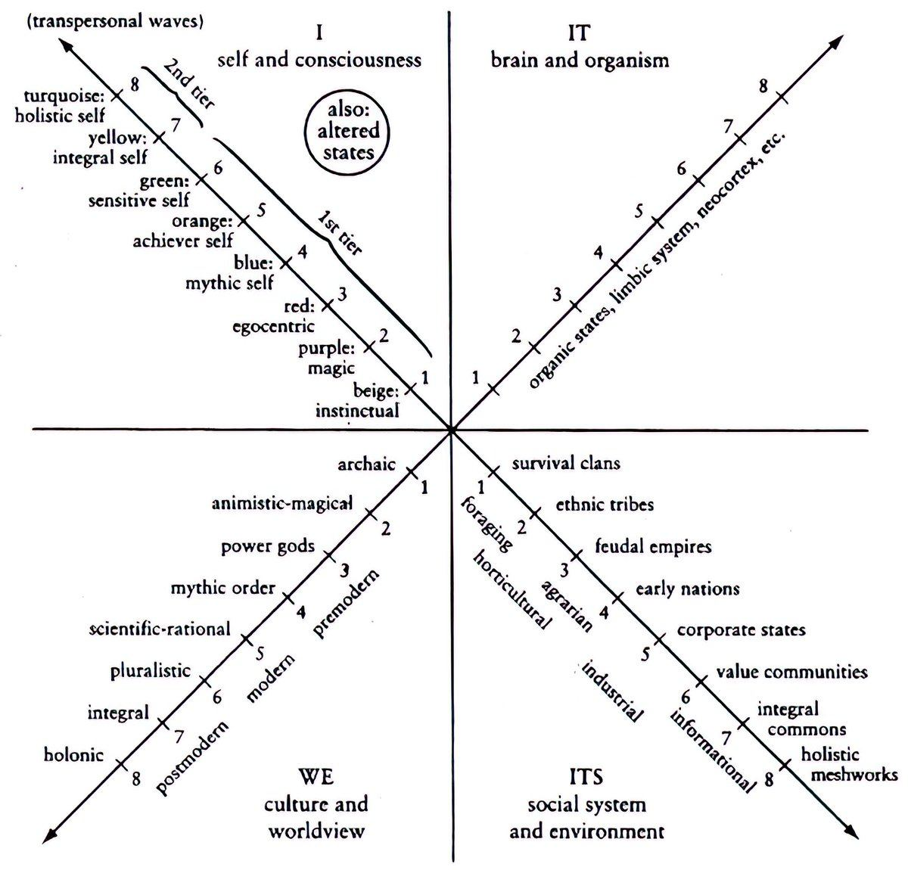
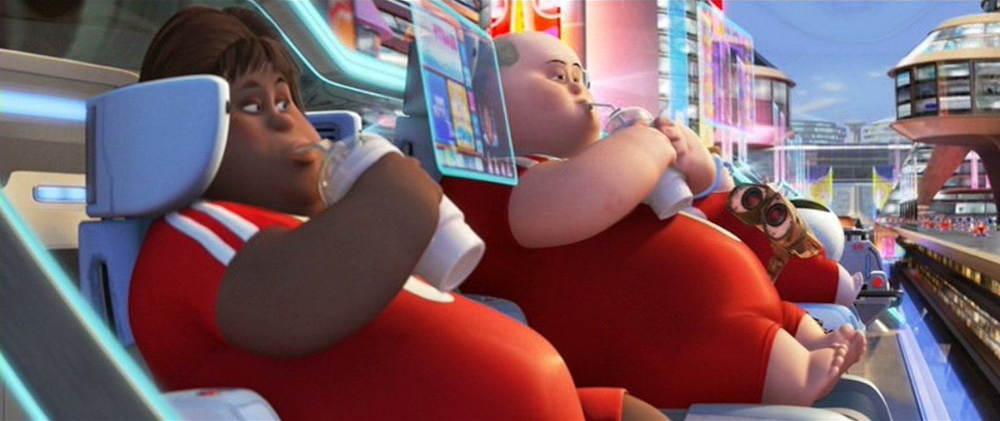

I can't help but think that humans will still want to work. That is, they will still want to create something, share it with another, and be recognized for their contribution by receiving some form of currency in return. This is a fundamental aspect of human nature, but it's unfortunate that "work" has become a dirty word stripped of meaning as productivity has become our God.
我不太担心工业工厂式的工作被自动化。我们都知道那个没有灵魂的深坑会对一个人造成什么。
I am less concerned with industrial factory-style work being automated. We all know what that soulless pit does to a person.
我更担心的是创造性的工作。
I am much more concerned with creative work.
那样的未来会是什么样？
What will that future look like?
金钱会过时吗？
Will money become obsolete?
AGI 会写出所有的散文、创作出所有的艺术吗？
Will AGI write all prose and create all art?
如果挣扎、地位和好奇心是意义的生成器，而 AGI 承诺把这些从我们身上拿走，我们该怎么办？
If struggle, status, and curiosity are the generators of meaning, and AGI promises to rid us of such, what do we do?
如果真有的话，AGI 无法取代的那一样东西是什么？
What is the one thing that AGI can't replace, if anything?
在一个没有稀缺的世界里，你如何成为那个稀缺品？
In a world without scarcity, how do you become the scarce good?
I want to share 6 ideas on the future of work, the skills and traits you must optimize for as a creative, and ultimately how to live a meaningful life in a future that feels daunting. I'll share both my own thoughts and theories that I believe hold relevant weight.
如果你是一个想知道 AI 会不会取代你工作的创意人，这篇就是为你写的。
And if you are a creative who wants to know if AI will ever replace your work, this is for you.
(By the way, my articles are long. If you don't have time right now, bookmark it, but I don't expect this to please those with goldfish attention spans. My goal with these is for you to understand rather than collect a bunch of bullet points that sound nice but do nothing for you.)
一、意义危机让意义变得值得付费
I – The meaning crisis makes meaning worth paying for
意义已经成了一种稀缺品。
Meaning has become a scarce good.
这不难看出来。
It's not hard to see that.
但要理解我们是怎么陷入这团乱麻的，上一点历史课会有帮助。
But to understand how we got into this mess, a little history lesson helps.
You see, reality develops toward greater complexity over time. When things become too complex or chaotic, a new ordered structure (or a new whole to envelop the parts) must emerge.
几个简单的例子：
A few simple examples:
字母 → 单词 → 句子 → 段落
Letter → Word → Sentence → Paragraph
原子 → 细胞 → 分子 → 有机体（译注：原文顺序如此。）
Atom → Cell → Molecule → Organism
物质 → 生命 → 心智 → 精神
Matter → Life → Mind → Spirit
现实就是这样构成的。
This is how reality is structured.

【配图】
说到意义，我想聚焦于社会是如何演化的，这可以从两个方面来看：
When it comes to meaning, I want to focus on how societies have evolved, which can be seen in two ways:
1）过去社会的技术—经济基础（或者说主导生产方式）以及所使用的具体技术。
1) The techno-economic base (or dominant mode of production) of past societies and specific technology used.
采集 → 园艺农业 → 农耕 → 工业 → 信息 → 接下来的某种东西（智能？）
Foraging → Horticultural → Agrarian → Industrial → Informational → Whatever comes next (Intelligence?)
Foraging societies were hunter-gatherers. Easy. In horticultural societies, men were the hunters and women tended small plots. In agrarian societies, food came from large scale farming, enabling massive surpluses, allowing men to work less so they could use their new time to explore, discover, and conquer.
这些社会的技术从以下方面发展而来：
The technologies of these societies developed from:
斧头、长矛和火 → 锄头和挖掘棒 → 畜力犁（从人力劳动到畜力劳动）。
Axes, spears, and fire → Hoe and digging sticks → Animal drawn plow (from human labor to animal labor).
所有这些社会大体上都属于前现代世界观。
All of these societies fell largely within the premodern worldview.
In other words, meaning is given by a higher power (elders, scriptures, kings, priests). You were told what to believe. You conformed. Agency was a trait that could get you killed or cast out.
Then came the Industrial Age, where food production came from mechanized agriculture. Fewer farmers fed more people, food became a commodity. The primary technologies were steam, coal, and oil. Human and animal labor were needed far less.
One key insight here is that the techno-economic base of a society creates the conditions for a new level of worldview and value system to be possible at scale.
An industrial society allowed for the modern worldview to take hold that valued rationality. Meaning was discovered through reason, science, and evidence rather than inherited by tradition. Nature became disenchanted, progress replaced the divine, and merit replaced birthright.
First, productivity became overemphasized at a young age. The second you were born, you were already expected to go to school, get a job, and become a cog in the machine. You were programmed like a robot since the start.
第二，我们与部落、村庄和社区断开了连接。我们孤身一人，身处一个充满人造连接的庞大数字世界。
Second, we disconnected from the tribe, village, and community. We are alone in a big digital world of artificial connection.
第三，宗教和灵性框架被机械论的宇宙模型取代。意义不再由神圣赋予。
Third, religious and spiritual frameworks were replaced with the mechanical model of the universe. Meaning was no longer given by the divine.
Fourth, we began outsourcing our agency to institutions and forgot the value of self-directed work. 9-5 jobs replaced the work of artisans and farmers.
These have all led to a corruption in what we do and how we work. Work was broken into simple, repetitive tasks that kept workers dumb to the entire process so they couldn't replicate it on their own (why generalists always beat specialists, as we've discussed in previous articles).
换句话说，无意义的工作成了我们唯一的关注点和生存手段。以至于我们无法以任何别的方式看待它，而当 AI 真的把这颗毒瘤从我们身上切除时，很多人将会被粗暴地惊醒。
In other words, meaningless work became our sole focus and means of survival. So much so that we can't see it any other way, and many people are in for a rude awakening when AI does remove this cancer from us.
That leads to the Information Age, where the invention of the computer led to a further abstraction from labor. We now sit at desks to work rather than tending fields - for the most part - and allow machines to do the heavy lifting.
如今主导的世界观是后现代主义，我们已经开始解构之前的一切。
The dominant worldview now is Postmodern, where we have begun to deconstruct everything prior.
（顺便说一句，我保证这和工作的未来有关。）
(By the way, I promise this is relevant to the future of work).
The key insight of postmodernism is aperspectivalism, or that no perspective is privileged. All views are situated, partial, and contextual. This is a great achievement, because we now know that one view is not the one true and absolute view (religiously, politically, etc) that everyone must conform to.
然而，这项成就只是进一步加速了意义危机。以至于我们正在意识到：必须有所改变。
This achievement, however, has only accelerated the meaning crisis even further. So much so that we are waking up to the fact that something has to change.
If no perspective is better, truer, or more developed than another, then the claim that all perspectives are equally valid is a perspective you are claiming is better. It is a value ranking. You deconstruct all hierarchies by creating your own.
后现代主义正确地看到了没有任何视角是绝对的，但随后错误地得出结论：没有任何视角是更好的。
Postmodernism correctly saw that no perspective is absolute, but then incorrectly concluded that no perspective is better.
Meaning from "Up There" (the Gods) → Meaning from "Out There" (productivity and progress) → Meaning From "Nowhere" (supposed equality) → What comes next (Meaning From "In Here?")
And last, we're smack in the middle of chaos, demanding a new structure to emerge. We get to play a role in how the future is formed. This is one massive reason why I write so much.
To understand that, we must understand the emerging techno-economic base (artificial intelligence), because that creates the conditions for the next worldview, and thus what we value, and even further what we do.
很重要的东西。
Important stuff.
二、AI 的加速（以及无意义感的加速）
II – The acceleration of AI (and meaninglessness)
AI 承诺把我们从一切劳动中解放出来。
AI promises to remove us of all labor.
至少炒作的内容是这样，所有人关注的也是这个。
At least that's what the hype is all about and what everyone is focused on.
它承诺提供生活必需品，让我们不再生活在稀缺之中。
It promises to provide the necessities so that we no longer live in scarcity.
但无论从哪个角度衡量，它实现这一点的方式，只会加剧意义的稀缺。很多人，包括我自己，都从某种类型的劳动中获得意义。我一点也不反对 AI，但我看不到一个 AI 会把"手艺"从创意人身上拿走的世界。
But by all measures, the way in which it does so only increases the scarcity of meaning. Many people, including myself, derive meaning from a certain type of labor. I am not anti-AI in slightest, but I do not see a world where AI removes the craft from the creative.
To get a full picture, David Shapiro's Post Labor Economics is a useful theory for what the future could look like.
所有人心里想的问题是这样的：
The problem that's on everyone's mind is this:
自从有了工作（为工资而劳动）以来，公司付钱给工人，工人花钱，公司赚钱，循环往复。
Since jobs have been a thing (working for a wage), companies pay the workers, workers spend the money, companies make the money, and the cycle continues.
As a company, the thought of having a machine do all your work is enticing. Humans are expensive, complicated, emotional, and legally risky. Up until now, the only option was to hire humans.
一旦 AI 和机器人在某项工作上越过了"更好、更快、更便宜、更安全"的门槛（我们假设它们真的会达到那一点，目前我们只能猜测），继续让人类做这份工作在经济上就变得不理性了。不理性不等于不道德，也不等于可选。我不打算在这里评判这样做是否道德。
Once AI and robots cross the "better, faster, cheaper, safer" threshold for given job (let's assume they actually do reach that point, we can only guess for now), it becomes economically irrational to keep humans doing the work. Irrational does not mean immoral or optional. I'm not here to take a stab at the morality of doing this.
It's irrational because the hoe replaced the digging stick. The animal drawn plow replaced the hoe (and allowed a new class of explorers and conquerers to emerge). Industrial machines replaced the plow. With each evolution, the power and potential of an individual who utilized the tools increased. In today's world, an individual can run a more lean and profitable business than many corporations could in the past. You can learn anything and build anything, but even with that power, most people will do nothing, and those who do will be in endless competition with each other, making us all ask where one's competitive advantage lies.
当然，AI 取代所有工作，会带来一个巨大的问题。
But of course, there's a huge problem with AI replacing all jobs.
如果所有人都被解雇了，就没人有钱。如果没人有钱，就没人买东西。如果没人买东西，经济就会崩溃。
If everyone gets fired, no one has money. If no one has money, no one buys anything. If no one buys anything, the economy collapses.
我们会发现，上面这句话适用于有工作的人，而不是有公司的人，这让我忍不住想起纳瓦尔的这句话：
As we'll find, the above sentence applies to people with jobs, not people with companies, and I can't help but think about this quote from Naval:
这个星球上有将近 70 亿人。我希望有一天，会有将近 70 亿家公司。
There are almost 7B people on this planet. Someday, I hope, there will be almost 7B companies.
眼下，大多数人担心如果没有工作，自己要怎么拿到钱。家庭获得收入只有以下三种方式：
Right now, most people are worried about how they'll get paid if they don't have a job. The only three ways households get money is as so:
工资——有人为你的劳动付钱（雇主、客户、自雇）
Wages – Someone pays you for your labor (employer, customer, self-employment)
If the first collapses, the second and third have to carry the weight. But transfers alone create political instability and lose price signals. It just won't work as an overall solution.
也就是说，一个潜在的解决方案是扩大资本参与。普通人会拥有能产生收入的资产。
Meaning, one potential solution would be broadening capital participation. Regular people would own income-generating assets.
To keep this brief, I will not list all of the proposed mechanisms for this. Because the truth is that some people, especially creatives, will still want to work and be acknowledged for their work. That's what we're here to talk about.
Personally, I do not want to sit around and collect a baseline level of cash. Much of the meaning in my life comes from growing personally and professionally across various domains of life, and growth requires agency, and if money shifts from a productivity metric to a way to express agency, that is the path I would want to pursue.
But before we talk about how to join the new meaning economy or what high-level skills are required, we've missed something critical, which is how meaning is generated in the first place.
三、意义的演化与解剖（机器人 vs 人类）
III – The evolution and anatomy of meaning (robots vs humans)
The elegance of the future is not in man versus machine but in their division of labor: silicon sanding the rough edges of necessity so carbon can ascend to meaning. We will abolish baristas and canonize chefs, silence agents and encore actors. It is the same selfish instinct in both arenas—purge friction, preserve narrative—driving a world where the driest chores are done by circuits and the juiciest stories are told by people who bleed.
– Chris Paik
在历史的大部分时间里，人类通过仰望天空来寻找意义——或者说活下去的理由。
For most of history, humans found meaning - or a reason to live - by looking up to the sky.
"在上面。"
"Up there."
意义是被赋予的。
Meaning was given.
然后，据说我们变聪明了。我们把生产力奉为神明。我们向科学和理性寻求意义。
Then, we got smarter, supposedly. We made productivity our God. We looked to science and reason for meaning.
"在外面。"
"Out there."
意义是挣来的。
Meaning was earned.
现在，我们聪明过头了。我们在相对性中寻找意义，却找不到。
Now, we've become too smart for our own good. We looked for meaning in relativity and couldn't find it.
Going into the future, it is your job to pick up the pieces. You must accept your role as the creator you are. The tool builder. The explorer. The problem solver. If you outsource too much of your agency to the machines, they will be just fine having you hooked up to a collective dopamine IV.

【配图】
现在，意义必须被生成。
Now, meaning must be generated.
你如何生成意义？
How do you generate meaning?
嗯，看看是什么造成了无意义，会有帮助。
Well, it helps to look at what creates meaninglessness.
First, meaninglessness stems from stagnation. If you do nothing with your life - like many will once jobs are gone and they have just enough to stay afloat - you do not stay the same. You slowly fall into chaos. Entropy can be observed in the mind, too.
Second, meaninglessness is amplified by isolation. Without tribes and villages, we are the loneliest we've ever been. Screen in face waiting for the next paycheck so you can buy buy buy.
那么我们可以说，意义的两大支柱是：向前推进的感觉，以及与某种比你自身更大的东西的连接。
We could then say that the two pillars of meaning are the feeling of forward movement and a connection to something greater than yourself.
For the longest time, we outsourced both. Progress was given by an employer and connection was given by a divine authority. Now, both are in your hands, and that will not sit well with a lot of people.
Progress and contribution are activated through creative problem-solving. You have an aim for the future, you identify a problem preventing you from moving forward, you create a solution through experimentation, and you pass that on to someone else in a similar position, and if that person deems it valuable enough, they will exchange another form of value back with you.
当然，这并不能帮助理解如果所有工作都消失了，创意人将如何生存。我们正在讲到那里。
Of course, that doesn't help with understanding how creatives will survive if all jobs are gone. We're getting to that.
What I am arguing is that you must become a creator. You must build your own thing. You must take your own path. You must express your agency. Do not, by any means, sit around waiting for the day when the world promises to solve all your problems, because I promise that it won't.
在意义的两大支柱之外，还有三个生成器：
Beyond the two pillars of meaning, there are three generators:
挣扎（Struggle）——进步的引擎。你选择为之挣扎（或在乎）的东西，就是你的使命。
Struggle – The engine of progress. What you choose to struggle for (or care about) is your purpose.
好奇心（Curiosity）——进步的方向。为解决问题而做出的非线性的注意力选择。
Curiosity – The direction of progress. The non-linear choice of attention to solve problems.
地位（Status）——贡献的证明。完成整个回路的认可。
Status – The proof of contribution. The recognition that completes the loop.
把这些放在一起，你就得到了一个故事。
When you put all those together, you get a story.
故事，真实的故事，才是将要求溢价的东西。
Stories, authentic stories, are what will demand a premium price tag.
因为人类的大脑是一台故事引擎。
Because the human brain is a story engine.
这是我们理解世界的方式。
That's how we make sense of the world.
当某件事本该快却很慢时，我们会讨厌它。
We hate when something is slow when it should be fast.
We hate long lines at the DMV. We hate the small-talking Uber Driver that's late. We hate sitting for 30 minutes on hold to ask what should be a simple support question. We hate when our fast food order is wrong.
但我们会花大价钱飞越半个地球，去一家五星级餐厅用餐。
But we will pay top dollar to fly across the world to dine at a five-star restaurant.
我们会坐在剧院里，看一出催人泪下的戏，紧张得身子前倾到座位边缘。
We sit on the edge of our seats while watching a tear-jerking play at the theatre.
When the task is about speed, accuracy, or utility, leave it to the machines. But when our mind leave the state of needing to do something just to get it done (when we engage in leisure, which there will be plenty of in the future) we crave something entirely different.
我们渴望失败的可能性。
We crave the potential for failure.
我们渴望那个会流血的人所给出的教训。
We crave the lesson of the man who bleeds.
我们渴望故事、戏剧、新奇、神话和意义，而且我们愿意为此付大价钱。
We crave the story, drama, novelty, myth and meaning, and we pay good money for it.
一整个经济将围绕这一点建立起来，而且建设已经开始了。
An entire economy will be built around this, and the construction has already started.
那么问题是，你有什么如此独特之处？我们又如何确定这不会被机器取代？
The question then is, what is so unique about you? And how can we be sure this won't be replaced by machines?
四、创作者经济 = 意义经济
IV – The creator economy = the meaning economy
如果你不从工作中获得报酬，又不觉得收集刚好够覆盖生活必需的被动收入有什么意义，那还剩下什么？
If you are not paid from a job, and you do not find meaning in collecting just enough passive income to cover your necessities, what's left?
从那些相信你所做的事、并希望在世界上看到更多这类事的人那里获得报酬。
To get paid from people who believe in what you are doing and want to see more of it in the world.
你追求你在乎的东西，并激励别人也在乎它。
You pursue what you care about and inspire people to care about it too.
那么，注意力就是创意人将要争夺的稀缺资源。
Attention, then, is the scarce resource that creatives will be competing for.
我们已经在创作者经济中看到这一幕正在上演。
We've already been seeing this play out in the creator economy.
一个显而易见的例子是埃隆·马斯克，他理解注意力的原始力量。他真的可以用它塑造未来。他可以调动资本、人才和人脉。他（拥有）资源中的资源，确保他实现星际化的毕生事业得以推进。（译注：原文此句语法残缺，"He resource of all resources"，按语义补译。）
Elon Musk, as an obvious example, understands the raw power of attention. He can quite literally shape the future with it. He can marshal capital, talent, and networks. He resource of all resources to ensure that his life's work of becoming interplanetary is carried out.
Think about how you get your education, news, and knowledge today. Most of it is on social media from creators who have taken it on as their job to provide their point of view. Centralized education and information is still at large, but not for long.
However, I don't want to be the next Mr. Beast. You probably don't want the risk and criticism of Musk. You simply want to pursue your interests and share it with a tribe of people who care about your vision just as much as you do, just like your brain is wired for. You want to generate and share meaning.
对创作者经济最大的误解，是认为它是一个赢家通吃的战场。这与事实相去甚远。
The biggest misconception of the creator economy is that it's a winner takes all battleground. That couldn't be any further from the truth.
Justin Welsh, a friend in the space, is known for wanting a quiet life. He wants meaningful work, ample family time, and the ability to do what he wants without financial stress. He does quite well for himself and has full control over how long he "works."
But you don't even have to go that big. There are plenty of people with small followings that make more than enough to live well. They don't grind 16 hours a day. They don't care about becoming billionaires. They just have something they deem meaningful and share it (while pairing it with the specific skills that allow them to garner attention, as we will discuss). You see these people every day. And by the way, if you want to become a billionaire or work extreme hours, be my guest, some people love that way of life and I'm not here to tell you how to live.
"但是 Dan，那'死亡互联网'呢？AI 难道不会用脑腐内容和垃圾（slop）淹没这个空间吗？"
"But Dan, what about the dead internet? Isn't AI just going to flood the space with brain rot and slop?"
会的，确实会。
Yes, actually.
这怎么就不是好事呢？
How is that not a good thing?
你是在告诉我，所有人都在用平庸的内容淹没这个空间，所以脱颖而出从未如此容易？我认为对 AI 垃圾内容的大部分担忧，源于不理解注意力是如何运作的。
You're telling me that everyone is flooding the space with mediocre content so it's never been easier to stand out? I think most of the worry about AI slop stems from a lack of understanding how attention works.
一旦所有人都能瞬间做到，它就会瞬间变得一文不值。
Once everyone can do it instantly, it becomes instantly worthless.
当然，任何人都可以让 AI 写 1000 条帖子或 10 篇文章去玩算法彩票，但你多久能看到一次"垃圾"真的火起来？如果它火了，那不就说明它不是垃圾吗？
Sure, anyone can have AI write 1000 posts or 10 articles to play the algorithm lottery, but how often do you see "slop" actually go viral? And if it did, doesn't that mean it's not slop?
垃圾是一个光谱。上周我的文章爆火时，有人把它贬低为"不过是一堆自我提升的陈词滥调"，可如果你真的读过那篇文章，就知道这有点牵强——考虑到里面有关于心理学、认识论和人类行为的章节。没有任何 AI 提示词能生成那篇一模一样的文章，甚至这篇也不能。我不是说那是地球上最深刻的文字，但它让我不禁要问：为什么一点点自我提升的内容就能让某些人陷入盲目的暴怒——难道自我提升就不能在这一点上帮帮你吗？聪明人往往偏向于自己擅长的领域，这是一种相当低效的思维方式。坦白说，一旦一样内容变得"流行"，那些自认为反主流的人就会立刻找到理由去讨厌它。一个人的垃圾是另一个人的宝藏，反之亦然。
Slop lives on a spectrum. When I went mega viral last week, I had people reducing my article to "just a bunch of self-help cliches" when, if you actually read the article, you know that is a bit of a stretch - considering the sections on psychology, epistemology, and human behavior. There is no AI prompt that could produce that exact same article, or even this same article. Not to say that it was the deepest writing on Earth, but it makes me question why a bit of self-help sends certain people into a blind rage - could self-help not help you there? Smart people are often biased to the domains they are smart in, which is quite an unproductive way of thinking. And frankly, once a piece of content becomes "popular," people who identify as anti-mainstream immediately find a reason to hate it. One mans slop is another mans treasure and vice versa.
Slop aside, you have access to ChatGPT, right? Then why are you reading this? Is it because you didn't know what to type into the chatbot? Is it because there's more to life than answering the questions you know to ask? Do you think ChatGPT is just going to deliver this exact article to you on a silver platter one day? Seriously, think about those questions before you start going on about how everything is doomed.
真相是，技能正在被向上抽象一层。
The truth is that skills are being abstracted up a layer.
The manual task of typing words on a page or adding brush strokes to a painting still matter, because compiling everything into a chat input removes agency for work that demands a personal touch, but they don't matter as much as the mind of the artist doing that thing.
Skills like marketing, persuasion, writing, digital art, programming, and more still matter, but the people who are able to get the most results are operating from a higher level.
他们在"人"的层面上运作。
They're operating at the human level.
五、最后一道可防守的护城河，就是你
V – The last defensible moat is you
作为一名写作者，过去几年我一直在思考这个问题。
As a writer, I've been thinking about this a lot over the past few years.
AI 有一天能完全取代创意人和艺术家吗？无论你怎么解读，这听起来都有点凄凉。
Will AI ever be able to fully replace creatives and artists? That seems kind of bleak no matter which way you spin it.
AI 有一天能写出我写的东西吗？
Can AI ever write what I write?
AI 有一天能创作出一位著名音乐人的音乐吗？
Can AI ever create the music of a famous musician?
AI 有一天能制作出斯皮尔伯格水准的电影吗？
Can AI ever produce a Spielberg level film?
AI 有一天能像史蒂夫·乔布斯那样打造出苹果这样的公司吗？
Can AI ever build a company like Steve Jobs could with Apple?
Many will argue that AI can generate a beautiful essay or film, especially as the models get better, but they're missing something crucial.
我们把它叫作"互换测试"（The Swap Test）：
Let's call this The Swap Test:
如果你可以把创作者换掉，而作品依然同样有价值，那么 AI 就能取代它。
If you could swap the creator and the creation would be just as valuable, then AI can replace it.
如果作品之所以成立，只是因为是你做的，那这就是你的优势。它承载着你的视角、你的处境和你的品味。
If the creation only works because you made it, then that's your edge. It carries your perspective, your situation, and your taste.
你看，某些类型的工作有一个客观的底线。
You see, certain types of work have an objective floor.
就写作而言，让 AI 写文档、汇总多个信息来源、或者把说明写得更清楚，完全没问题。见鬼，我甚至会说 AI 可以把你原创想法的"大脑倾倒"整理成可以发表的东西，不过有些人可能还有自己想传达的风格。
When it comes to writing, it's perfectly fine if AI writes documentation, summarizes multiple sources of information, or makes instructions clearer. Hell, I would even argue that AI can take a brain dump of your original thoughts and structure them into something publishable, but some people may have a style they want to get across as well.
换句话说，如果速度和效率比声音（voice）更重要，你可以把控制权交给 AI。
In other words, if speed and efficiency matter over voice, you can hand off control to AI.
But when it comes to writing a personal essay about grief after losing a parent, or writing an article arguing why minimalism is a trap for creatives, there's something different at play.
起作用的是你的观点。
Your point of view is at play.
你知道的，这个星球上最独特的东西，其他任何人都无法获取。
You know, the most unique thing on this planet that nobody else has access to.
自你出生那天起就一直在形成的、由信念、观念和经历汇聚而成的总和，既不能倒转，也不能重新模拟。
The culmination of beliefs, ideas, and experiences that can't be reversed or resimulated that has been forming since the day you were born.
So that begs the question, if anyone can copy your writing, product, music, or art with a single prompt, when should you not hand over control to AI?
答案在于 AI 无法触及的东西。
It lies in what AI cannot access.
AI 无法从你的视角去思考。它只能思考"关于"你的视角，或者"以你的视角的风格"去思考。
AI cannot think from your perspective. It can only think about your perspective or in the style of your perspective.
AI 无法复制你的能量印记。它无法选择关注什么，以及为什么这件事此刻对你重要。
AI cannot replicate your energy signature. It cannot select what to focus on and why it matters to you right now.
AI 无法进行真正的意义建构（sensemaking）。它无法决定信息意味着什么、什么是重要的、或者如何框定它。
AI cannot perform genuine sensemaking. It cannot decide what information means, what's important, or how to frame it.
AI 没有人生轨迹。它没有死亡的赌注。即便死亡成了一个被解决的问题，对人类来说，一个时刻一旦过去，就结束了。AI 可以模拟故事，但时间并不像对我们那样，对它充当一种天然的压缩算法。
AI does not have a trajectory. It does not have the stakes of death. And even if mortality becomes a solved problem, once a moment passes for humans, it's over. AI can simulate stories, but time does not serve as a natural compression algorithm like it does for us.
AI 没有不断演化的品味。它不会回头看自己一年前写的东西并且不同意它。它不会成长。
AI does not have evolving taste. It does not look back on its writing from a year ago and disagree with it. It does not grow.
换句话说，AI 能复制任何东西，但在"接下来会发生什么"真正发生之前，它无法复制它。
In other words, AI can copy anything, but it cannot copy what happens next until it has already happened.
What is considered "great work" is a moving target that evolves with society and culture. For creatives, the act of discovering what they think is the process.
如果 AI 此刻能完美地像我一样写作，那么我，作为一个固执的人，就不会想再写那个东西了。我在乎的东西会立刻改变。
If AI could perfectly write like me, right now, then I, being a stubborn human being, would not want to write about that anymore. What I care about would instantly change.
每当我试图让 AI 像我一样写作，我都会立刻不喜欢它。因此，我不会去写那个东西。
When I try to get AI to write like me, I immediately dislike it. Therefore, I would not write that thing.
那么，走向工作的未来，有什么变了？
So what's changed going into the future of work?
其实什么都没变。我们只是终于揭示出了原本就重要的东西。人们如此担心 AI 垃圾内容的狂潮，却没意识到，供应量巨大的商品会变成大宗商品。人类的视角无法被商品化，因此它永远会要求溢价。
Nothing, really. We're finally just uncovering what mattered in the first place. People are so worried about the onslaught of AI slop without realizing that goods in high supply become commodities. The human perspective cannot be commoditized, therefore it will always demand a premium.
这些都说得通，听起来也很好，但不太实用。
All of that makes sense and sounds nice, but it's not very practical.
那么，你现在就能开始做些什么，确保你创造出一个值得付费的视角？
So what can you start doing, right now, to ensure that you create a perspective worth paying for?
六、后劳动时代的技能组合
VI – The post-labor skill stack
未来的技能组合，不能被局限在特定职业的技能上。
The skill stack of the future cannot be pinned down to career specific skills.
我们都知道 AI 能写内容、写代码、写音乐。
We all know that AI can write content, code, and music.
更重要的是，培养那些让这些东西具有"人味"的技能。
What's much more important is developing the skills that make those things human.
Since this letter is getting long, I'm going to keep this brief. I already have and will continue to expand on these skills in my future writing. For now, this list is just for awareness so you can begin noticing opportunities to refine acquire and refine them.
这个技能组合，与其说是组合，不如说是一个技能层级，如下：
The skill stack, which is more of a skill hierarchy, looks like so:
1）能动性（Agency）——创造一个值得讲述的故事的元技能
1) Agency – The meta skill that creates a story worth telling
能动性是在没有许可或外部提示的情况下行动的能力。
Agency is the ability to act without permission or outside prompting.
In other words, it's your ability to create a unique story. It's your ability to set a trajectory for your life and make the billions of small and large decisions that move you forward, backward, and side to side. Within each of those decisions lies an opportunity to acquire pieces of knowledge that are then deposited in what you choose to create.
能动性是通过我们前面讨论过的意义三大生成器来练习的：挣扎、地位和好奇心。
Agency is practiced through the 3 generators of meaning we discussed prior: struggle, status, and curiosity.
Struggle requires you to make deliberate choices, reject conformity, step into the arena, create the potential for failure, and develop a character arc. Staying on the default path society wants you on is a surefire way to get replaced.
Status, in the future, will still revolve around money, but money will shift from a productivity metric to a tool to express agency. The more money you acquire (not that you need to get uber rich) the more options you have, and the more unique your decision making can be. The complexity of your story increases with money.
Curiosity is how you, specifically, filter signal from noise. The more distracted and numb you become, the less you can notice your core pulling you toward a novel path in life.
2）品味（Taste）——辨别的技能
2) Taste – The skill of discernment
AI 眼下正在制造"无限图书馆问题"。
AI right now is creating the infinite library problem.
Given infinite time, a bunch of monkeys typing randomly could produce Shakespeare, but the output is meaningless because there's no intention or selection behind it.
要培养品味，你必须建造属于自己的东西。
To develop taste you must build something of your own.
Because if taste is the ability to discern what's worth keeping vs what's not, and you do not have full control over that process, you are being molded by the taste of another.
作为一个创意人，策展是一项远比创作更重要的技能。
As a creative, curation is a far more important skill than creation.
3）视角（Perspective）——提升你作为人的容量
3) Perspective – Increasing your human capacity
发展心理学表明，人类的价值观和世界观会随着时间，经历一系列可预测的阶段而演化。
Developmental psychology illustrates that human values and worldviews evolve through predictable stages over time.
我们在这封信的开头就学过这一点。
We learned this back up at the top of this letter.
In other words, your mind expands. You're able to make sense of higher level systems and constructs. You're able to house greater complexity of thought without labeling it as "wrong" as a defense mechanism for a lack of understanding.
In other other words, you collect more perspective. You do not see the world from a narrow lens, which hinders your ability to curate, which limits the value of your taste.
The problem, as we see very clearly on social media, is that most of the population (documented at around 50%) lives in a highly conformist stage of development.
Meaning, most people don't have the cognitive capacity for genuine agency. They simply here that they should become high agency and conform to that idea, which is a low agency behavior.
We've talked about ego development theory plenty of times before, and I will continue talking about it, but here's the 80/20 of what actually increases your capacity for greater perspective:
You do not try to "level up." You simply allow yourself to become disoriented or knocked out of equilibrium and let that become your new normal with time (and without rejecting it).
Example: When you get a new job and feel like you can't do it, because your current mind can't metabolize it, you learn. Same goes for new relationships or exposing yourself to new cultures.
你能做的最糟糕的事，就是在你当前的视角上加倍下注，因为那就是你对成长关上大门的方式。
The worst thing you can do is double down on your current perspective, because that's how you close yourself off to growth.
人们试图太快地解决痛苦或失调，因为在今天的世界里，一切都很快。
People try to resolve pain or dissonance to quickly because in today's world, everything is quick.
他们把某个政治观点奉为法律，于是其他所有人都错了。
They take the political opinion as law and now everyone else is wrong.
Or, they experience a false transformation and act like the higher stage without actually embodying it. We see this all the time in hippies. They use spirituality as a status symbol to mask their massive ego.
But most creatives stop there. They simply think they can post, write, produce and somehow people will magically find it. Or, they think that sounding intelligent or clever in their writing is enough to signal that their ideas are worth following. In reality, nobody cares unless you can persuade them as to how it's beneficial to their lives.
当我们生活在部落村庄里时，你会被分配一个角色。你生产必需之物，其他人从中受益。
When we lived in villages in tribes, you were assigned a role. You produced what was necessary and others benefited from it.
在今天的世界里，你似乎孤身一人。你必须付出努力，才能让你的作品传播开来。
In today's world, you're seemingly all alone. You must put in effort to get your work spread.
Because you can have the best book, product, painting, or music in the world, but if you don't understand the attention mechanisms (marketing, sales, social media, advertising) nobody is going to see it, and nobody is going to care enough to pay you. Art must merge with business.
我们不需要深入讨论"如何"学习这些技能，因为它们在这个技能层级中排得较低是有原因的。
We don't need to go into "how" to learn these skills, because they are lower in this skill hierarchy for a reason.
你会通过建造自己的东西、犯错、纠错，自动学会它们，而只有发展程度更高的人才能有效地做到这一点。
You learn them automatically by building your own thing, making mistakes, and correcting those mistakes, and only a person of higher development can do that effectively.
In a nutshell: if you aren't getting the results you want, you need to experiment, learn, and iterate until you do. That's how you become effective at anything.
5）技术诀窍（Technical Know-How）——利用 AI 和工具
5) Technical Know-How – Utilizing AI and tools
这封信看起来可能像是在反对 AI，但我可以向你保证，并不是这样。
This letter may seem like it's against AI, but I can assure you that is not the case.
你不需要选边站。
You don't need to pick a team.
拜托，我们刚刚在讨论培养视角时就讲过这个了。
And c'mon, we just talked about that with developing perspective.
事实是，每个人都会在某种程度上与 AI 一起工作，即便是那些发誓反对它的创意人（他们一边在 X 上发帖说自己多讨厌 AI，一边直接喂养着 Grok 的算法，干得漂亮）。
The truth is, everyone is going to be working with AI in some capacity, even the creatives who swear against it (while posting on X about how much they hate AI, feeding straight into Grok's algorithm, well done.)
我能给的最好的建议，一如既往，是去实验。
The best advice I can give, as always, is to experiment.
在你建造的下一个项目里试着使用 AI。
Try to use AI for the next project you build.
问问 AI，你可以把哪些不需要个人手笔的任务交给它。
Ask the AI how you can pass off tasks that don't demand a personal touch.
Feed it this letter if you want, give a description about what you are trying to create, and start playing around. See if it can provide some cognitive offload so your mind is more free to focus on what matters.
我就写到这里吧，因为我写得有多累，我相信你读得就有多累。
I will leave it there, because I'm as tired of writing as I'm sure you are reading this.
感谢你的注意力。
Thank you for your attention.
——Dan
– Dan
English original (from the X article data)
Everyone is worried about whether or not AI will replace them.
But I can't help but think that there is something about the human experience that can't be replaced.
I can't help but think that humans will still want to work. That is, they will still want to create something, share it with another, and be recognized for their contribution by receiving some form of currency in return. This is a fundamental aspect of human nature, but it's unfortunate that "work" has become a dirty word stripped of meaning as productivity has become our God.
I am less concerned with industrial factory-style work being automated. We all know what that soulless pit does to a person.
I am much more concerned with creative work.
What will that future look like?
Will money become obsolete?
Will AGI write all prose and create all art?
If struggle, status, and curiosity are the generators of meaning, and AGI promises to rid us of such, what do we do?
What is the one thing that AGI can't replace, if anything?
In a world without scarcity, how do you become the scarce good?
I want to share 6 ideas on the future of work, the skills and traits you must optimize for as a creative, and ultimately how to live a meaningful life in a future that feels daunting. I'll share both my own thoughts and theories that I believe hold relevant weight.
And if you are a creative who wants to know if AI will ever replace your work, this is for you.
(By the way, my articles are long. If you don't have time right now, bookmark it, but I don't expect this to please those with goldfish attention spans. My goal with these is for you to understand rather than collect a bunch of bullet points that sound nice but do nothing for you.)
I – The meaning crisis makes meaning worth paying for
Meaning has become a scarce good.
It's not hard to see that.
But to understand how we got into this mess, a little history lesson helps.
You see, reality develops toward greater complexity over time. When things become too complex or chaotic, a new ordered structure (or a new whole to envelop the parts) must emerge.
A few simple examples:
Letter → Word → Sentence → Paragraph
Atom → Cell → Molecule → Organism
Matter → Life → Mind → Spirit
This is how reality is structured.
When it comes to meaning, I want to focus on how societies have evolved, which can be seen in two ways:
1) The techno-economic base (or dominant mode of production) of past societies and specific technology used.
Foraging → Horticultural → Agrarian → Industrial → Informational → Whatever comes next (Intelligence?)
2) The dominant worldview and value structure of people within those societies (their meaning-making system).
Premodern → Modern → Postmodern → Whatever comes next (Metamodern?)
For brevity, we can speedrun the first few.
Foraging societies were hunter-gatherers. Easy. In horticultural societies, men were the hunters and women tended small plots. In agrarian societies, food came from large scale farming, enabling massive surpluses, allowing men to work less so they could use their new time to explore, discover, and conquer.
The technologies of these societies developed from:
Axes, spears, and fire → Hoe and digging sticks → Animal drawn plow (from human labor to animal labor).
All of these societies fell largely within the premodern worldview.
In other words, meaning is given by a higher power (elders, scriptures, kings, priests). You were told what to believe. You conformed. Agency was a trait that could get you killed or cast out.
Then came the Industrial Age, where food production came from mechanized agriculture. Fewer farmers fed more people, food became a commodity. The primary technologies were steam, coal, and oil. Human and animal labor were needed far less.
One key insight here is that the techno-economic base of a society creates the conditions for a new level of worldview and value system to be possible at scale.
An industrial society allowed for the modern worldview to take hold that valued rationality. Meaning was discovered through reason, science, and evidence rather than inherited by tradition. Nature became disenchanted, progress replaced the divine, and merit replaced birthright.
That's where things started to go wrong.
• First, productivity became overemphasized at a young age. The second you were born, you were already expected to go to school, get a job, and become a cog in the machine. You were programmed like a robot since the start.
• Second, we disconnected from the tribe, village, and community. We are alone in a big digital world of artificial connection.
• Third, religious and spiritual frameworks were replaced with the mechanical model of the universe. Meaning was no longer given by the divine.
• Fourth, we began outsourcing our agency to institutions and forgot the value of self-directed work. 9-5 jobs replaced the work of artisans and farmers.
These have all led to a corruption in what we do and how we work. Work was broken into simple, repetitive tasks that kept workers dumb to the entire process so they couldn't replicate it on their own (why generalists always beat specialists, as we've discussed in previous articles).
In other words, meaningless work became our sole focus and means of survival. So much so that we can't see it any other way, and many people are in for a rude awakening when AI does remove this cancer from us.
That leads to the Information Age, where the invention of the computer led to a further abstraction from labor. We now sit at desks to work rather than tending fields - for the most part - and allow machines to do the heavy lifting.
The dominant worldview now is Postmodern, where we have begun to deconstruct everything prior.
(By the way, I promise this is relevant to the future of work).
The key insight of postmodernism is aperspectivalism, or that no perspective is privileged. All views are situated, partial, and contextual. This is a great achievement, because we now know that one view is not the one true and absolute view (religiously, politically, etc) that everyone must conform to.
This achievement, however, has only accelerated the meaning crisis even further. So much so that we are waking up to the fact that something has to change.
It also leads to a contradiction that must be solved in the next stage of development (the age of intelligence) we are entering:
If no perspective is better, truer, or more developed than another, then the claim that all perspectives are equally valid is a perspective you are claiming is better. It is a value ranking. You deconstruct all hierarchies by creating your own.
Postmodernism correctly saw that no perspective is absolute, but then incorrectly concluded that no perspective is better.
Some perspectives are, in fact, better.
Why does this matter?
First, meaning effectively evolved as so:
Meaning from "Up There" (the Gods) → Meaning from "Out There" (productivity and progress) → Meaning From "Nowhere" (supposed equality) → What comes next (Meaning From "In Here?")
Second, taste is a core skill that will matter going into the future, demanding that you say one thing is better than another. It demands exclusion.
Third, agency is also becoming a core survival skill. Very few people of the past consciously embodied it.
Fourth, your individual perspective may just be the one thing that AGI can't replace. It may just be your competitive edge in your creative work.
Fifth, creatives are the meaning-architects of a society, and if the baby is thrown out with the bathwater (jobs), the result could be catastrophic.
And last, we're smack in the middle of chaos, demanding a new structure to emerge. We get to play a role in how the future is formed. This is one massive reason why I write so much.
Further, productivity is no longer a reliable identity.
Nobody knows what path to take or what skill to learn.
Meaning is at an all time low, but so is certainty and security.
So what's the next stage?
What can we learn to ensure that we don't enter this new world at a massive disadvantage?
To understand that, we must understand the emerging techno-economic base (artificial intelligence), because that creates the conditions for the next worldview, and thus what we value, and even further what we do.
Important stuff.
II – The acceleration of AI (and meaninglessness)
AI promises to remove us of all labor.
At least that's what the hype is all about and what everyone is focused on.
It promises to provide the necessities so that we no longer live in scarcity.
But by all measures, the way in which it does so only increases the scarcity of meaning. Many people, including myself, derive meaning from a certain type of labor. I am not anti-AI in slightest, but I do not see a world where AI removes the craft from the creative.
But why?
Why will work disappear?
And what replaces the economic function of jobs?
To get a full picture, David Shapiro's Post Labor Economics is a useful theory for what the future could look like.
The problem that's on everyone's mind is this:
Since jobs have been a thing (working for a wage), companies pay the workers, workers spend the money, companies make the money, and the cycle continues.
But then AI comes along and threatens it all.
As a company, the thought of having a machine do all your work is enticing. Humans are expensive, complicated, emotional, and legally risky. Up until now, the only option was to hire humans.
Once AI and robots cross the "better, faster, cheaper, safer" threshold for given job (let's assume they actually do reach that point, we can only guess for now), it becomes economically irrational to keep humans doing the work. Irrational does not mean immoral or optional. I'm not here to take a stab at the morality of doing this.
It's irrational because the hoe replaced the digging stick. The animal drawn plow replaced the hoe (and allowed a new class of explorers and conquerers to emerge). Industrial machines replaced the plow. With each evolution, the power and potential of an individual who utilized the tools increased. In today's world, an individual can run a more lean and profitable business than many corporations could in the past. You can learn anything and build anything, but even with that power, most people will do nothing, and those who do will be in endless competition with each other, making us all ask where one's competitive advantage lies.
But of course, there's a huge problem with AI replacing all jobs.
If everyone gets fired, no one has money. If no one has money, no one buys anything. If no one buys anything, the economy collapses.
As we'll find, the above sentence applies to people with jobs, not people with companies, and I can't help but think about this quote from Naval:
There are almost 7B people on this planet. Someday, I hope, there will be almost 7B companies.
Right now, most people are worried about how they'll get paid if they don't have a job. The only three ways households get money is as so:
– Wages – Someone pays you for your labor (employer, customer, self-employment)
– Transfers – Government pays you (UBI, Social Security, SNAP, Medicare)
– Capital Income – Your assets pay you (dividends, rent, interest, appreciation)
If the first collapses, the second and third have to carry the weight. But transfers alone create political instability and lose price signals. It just won't work as an overall solution.
Meaning, one potential solution would be broadening capital participation. Regular people would own income-generating assets.
To keep this brief, I will not list all of the proposed mechanisms for this. Because the truth is that some people, especially creatives, will still want to work and be acknowledged for their work. That's what we're here to talk about.
Personally, I do not want to sit around and collect a baseline level of cash. Much of the meaning in my life comes from growing personally and professionally across various domains of life, and growth requires agency, and if money shifts from a productivity metric to a way to express agency, that is the path I would want to pursue.
I would recommend digging further into Shapiro's ideas and folllowing him for when his comprehensive book on this topic, Labor Zero, comes out.
Fortunately, there are jobs that may persist even when automation is superior. These jobs are based on humans specifically demanding other humans:
• High-liability roles (where there's someone to blame)
• Statutory positions (legally required humans)
• Experience economy (bartenders, boutiques, art)
• Meaning makers (helping people navigate the human experience)
• Relationship/trust jobs (sales, diplomacy, negotiation)
As an everyday creative, I want to focus on the third and fourth option.
That is what humans will pay a premium for.
But before we talk about how to join the new meaning economy or what high-level skills are required, we've missed something critical, which is how meaning is generated in the first place.
III – The evolution and anatomy of meaning (robots vs humans)
The elegance of the future is not in man versus machine but in their division of labor: silicon sanding the rough edges of necessity so carbon can ascend to meaning. We will abolish baristas and canonize chefs, silence agents and encore actors. It is the same selfish instinct in both arenas—purge friction, preserve narrative—driving a world where the driest chores are done by circuits and the juiciest stories are told by people who bleed.
– Chris Paik
For most of history, humans found meaning - or a reason to live - by looking up to the sky.
"Up there."
Meaning was given.
Then, we got smarter, supposedly. We made productivity our God. We looked to science and reason for meaning.
"Out there."
Meaning was earned.
Now, we've become too smart for our own good. We looked for meaning in relativity and couldn't find it.
"Nowhere."
Meaning was deconstructed.
Going into the future, it is your job to pick up the pieces. You must accept your role as the creator you are. The tool builder. The explorer. The problem solver. If you outsource too much of your agency to the machines, they will be just fine having you hooked up to a collective dopamine IV.
Now, meaning must be generated.
How do you generate meaning?
Well, it helps to look at what creates meaninglessness.
First, meaninglessness stems from stagnation. If you do nothing with your life - like many will once jobs are gone and they have just enough to stay afloat - you do not stay the same. You slowly fall into chaos. Entropy can be observed in the mind, too.
Second, meaninglessness is amplified by isolation. Without tribes and villages, we are the loneliest we've ever been. Screen in face waiting for the next paycheck so you can buy buy buy.
We could then say that the two pillars of meaning are the feeling of forward movement and a connection to something greater than yourself.
Progress and contribution.
For the longest time, we outsourced both. Progress was given by an employer and connection was given by a divine authority. Now, both are in your hands, and that will not sit well with a lot of people.
Progress and contribution are activated through creative problem-solving. You have an aim for the future, you identify a problem preventing you from moving forward, you create a solution through experimentation, and you pass that on to someone else in a similar position, and if that person deems it valuable enough, they will exchange another form of value back with you.
Of course, that doesn't help with understanding how creatives will survive if all jobs are gone. We're getting to that.
What I am arguing is that you must become a creator. You must build your own thing. You must take your own path. You must express your agency. Do not, by any means, sit around waiting for the day when the world promises to solve all your problems, because I promise that it won't.
Beyond the two pillars of meaning, there are three generators:
– Struggle – The engine of progress. What you choose to struggle for (or care about) is your purpose.
– Curiosity – The direction of progress. The non-linear choice of attention to solve problems.
– Status – The proof of contribution. The recognition that completes the loop.
When you put all those together, you get a story.
Stories, authentic stories, are what will demand a premium price tag.
Because the human brain is a story engine.
That's how we make sense of the world.
We hate when something is slow when it should be fast.
We hate long lines at the DMV. We hate the small-talking Uber Driver that's late. We hate sitting for 30 minutes on hold to ask what should be a simple support question. We hate when our fast food order is wrong.
But we will pay top dollar to fly across the world to dine at a five-star restaurant.
We sit on the edge of our seats while watching a tear-jerking play at the theatre.
When the task is about speed, accuracy, or utility, leave it to the machines. But when our mind leave the state of needing to do something just to get it done (when we engage in leisure, which there will be plenty of in the future) we crave something entirely different.
We crave the potential for failure.
We crave the lesson of the man who bleeds.
We crave the story, drama, novelty, myth and meaning, and we pay good money for it.
An entire economy will be built around this, and the construction has already started.
The question then is, what is so unique about you? And how can we be sure this won't be replaced by machines?
IV – The creator economy = the meaning economy
If you are not paid from a job, and you do not find meaning in collecting just enough passive income to cover your necessities, what's left?
To get paid from people who believe in what you are doing and want to see more of it in the world.
You pursue what you care about and inspire people to care about it too.
Attention, then, is the scarce resource that creatives will be competing for.
We've already been seeing this play out in the creator economy.
Elon Musk, as an obvious example, understands the raw power of attention. He can quite literally shape the future with it. He can marshal capital, talent, and networks. He resource of all resources to ensure that his life's work of becoming interplanetary is carried out.
Mr. Beast is another. He is a master of attention capture, reinvests that back into production, which leads to more attention.
Think about how you get your education, news, and knowledge today. Most of it is on social media from creators who have taken it on as their job to provide their point of view. Centralized education and information is still at large, but not for long.
However, I don't want to be the next Mr. Beast. You probably don't want the risk and criticism of Musk. You simply want to pursue your interests and share it with a tribe of people who care about your vision just as much as you do, just like your brain is wired for. You want to generate and share meaning.
The biggest misconception of the creator economy is that it's a winner takes all battleground. That couldn't be any further from the truth.
Justin Welsh, a friend in the space, is known for wanting a quiet life. He wants meaningful work, ample family time, and the ability to do what he wants without financial stress. He does quite well for himself and has full control over how long he "works."
But you don't even have to go that big. There are plenty of people with small followings that make more than enough to live well. They don't grind 16 hours a day. They don't care about becoming billionaires. They just have something they deem meaningful and share it (while pairing it with the specific skills that allow them to garner attention, as we will discuss). You see these people every day. And by the way, if you want to become a billionaire or work extreme hours, be my guest, some people love that way of life and I'm not here to tell you how to live.
"But Dan, what about the dead internet? Isn't AI just going to flood the space with brain rot and slop?"
Yes, actually.
How is that not a good thing?
You're telling me that everyone is flooding the space with mediocre content so it's never been easier to stand out? I think most of the worry about AI slop stems from a lack of understanding how attention works.
Once everyone can do it instantly, it becomes instantly worthless.
Sure, anyone can have AI write 1000 posts or 10 articles to play the algorithm lottery, but how often do you see "slop" actually go viral? And if it did, doesn't that mean it's not slop?
Slop lives on a spectrum. When I went mega viral last week, I had people reducing my article to "just a bunch of self-help cliches" when, if you actually read the article, you know that is a bit of a stretch - considering the sections on psychology, epistemology, and human behavior. There is no AI prompt that could produce that exact same article, or even this same article. Not to say that it was the deepest writing on Earth, but it makes me question why a bit of self-help sends certain people into a blind rage - could self-help not help you there? Smart people are often biased to the domains they are smart in, which is quite an unproductive way of thinking. And frankly, once a piece of content becomes "popular," people who identify as anti-mainstream immediately find a reason to hate it. One mans slop is another mans treasure and vice versa.
Slop aside, you have access to ChatGPT, right? Then why are you reading this? Is it because you didn't know what to type into the chatbot? Is it because there's more to life than answering the questions you know to ask? Do you think ChatGPT is just going to deliver this exact article to you on a silver platter one day? Seriously, think about those questions before you start going on about how everything is doomed.
The truth is that skills are being abstracted up a layer.
The manual task of typing words on a page or adding brush strokes to a painting still matter, because compiling everything into a chat input removes agency for work that demands a personal touch, but they don't matter as much as the mind of the artist doing that thing.
Skills like marketing, persuasion, writing, digital art, programming, and more still matter, but the people who are able to get the most results are operating from a higher level.
They're operating at the human level.
V – The last defensible moat is you
As a writer, I've been thinking about this a lot over the past few years.
Will AI ever be able to fully replace creatives and artists? That seems kind of bleak no matter which way you spin it.
Can AI ever write what I write?
Can AI ever create the music of a famous musician?
Can AI ever produce a Spielberg level film?
Can AI ever build a company like Steve Jobs could with Apple?
The answer I came to was... yes, but no.
Many will argue that AI can generate a beautiful essay or film, especially as the models get better, but they're missing something crucial.
Let's call this The Swap Test:
If you could swap the creator and the creation would be just as valuable, then AI can replace it.
If the creation only works because you made it, then that's your edge. It carries your perspective, your situation, and your taste.
You see, certain types of work have an objective floor.
When it comes to writing, it's perfectly fine if AI writes documentation, summarizes multiple sources of information, or makes instructions clearer. Hell, I would even argue that AI can take a brain dump of your original thoughts and structure them into something publishable, but some people may have a style they want to get across as well.
In other words, if speed and efficiency matter over voice, you can hand off control to AI.
But when it comes to writing a personal essay about grief after losing a parent, or writing an article arguing why minimalism is a trap for creatives, there's something different at play.
Your point of view is at play.
You know, the most unique thing on this planet that nobody else has access to.
The culmination of beliefs, ideas, and experiences that can't be reversed or resimulated that has been forming since the day you were born.
So that begs the question, if anyone can copy your writing, product, music, or art with a single prompt, when should you not hand over control to AI?
It lies in what AI cannot access.
• AI cannot think from your perspective. It can only think about your perspective or in the style of your perspective.
• AI cannot replicate your energy signature. It cannot select what to focus on and why it matters to you right now.
• AI cannot perform genuine sensemaking. It cannot decide what information means, what's important, or how to frame it.
• AI does not have a trajectory. It does not have the stakes of death. And even if mortality becomes a solved problem, once a moment passes for humans, it's over. AI can simulate stories, but time does not serve as a natural compression algorithm like it does for us.
• AI does not have evolving taste. It does not look back on its writing from a year ago and disagree with it. It does not grow.
In other words, AI can copy anything, but it cannot copy what happens next until it has already happened.
You, as a creative, have a perspective that is always evolving. AI is always chasing where you were but not where you are now.
By the time AI copies you, which could be instantly, you have already moved on.
What is considered "great work" is a moving target that evolves with society and culture. For creatives, the act of discovering what they think is the process.
If AI could perfectly write like me, right now, then I, being a stubborn human being, would not want to write about that anymore. What I care about would instantly change.
When I try to get AI to write like me, I immediately dislike it. Therefore, I would not write that thing.
So what's changed going into the future of work?
Nothing, really. We're finally just uncovering what mattered in the first place. People are so worried about the onslaught of AI slop without realizing that goods in high supply become commodities. The human perspective cannot be commoditized, therefore it will always demand a premium.
All of that makes sense and sounds nice, but it's not very practical.
So what can you start doing, right now, to ensure that you create a perspective worth paying for?
VI – The post-labor skill stack
The skill stack of the future cannot be pinned down to career specific skills.
We all know that AI can write content, code, and music.
What's much more important is developing the skills that make those things human.
Since this letter is getting long, I'm going to keep this brief. I already have and will continue to expand on these skills in my future writing. For now, this list is just for awareness so you can begin noticing opportunities to refine acquire and refine them.
The skill stack, which is more of a skill hierarchy, looks like so:
1) Agency – The meta skill that creates a story worth telling
Agency is the ability to act without permission or outside prompting.
In other words, it's your ability to create a unique story. It's your ability to set a trajectory for your life and make the billions of small and large decisions that move you forward, backward, and side to side. Within each of those decisions lies an opportunity to acquire pieces of knowledge that are then deposited in what you choose to create.
Agency is practiced through the 3 generators of meaning we discussed prior: struggle, status, and curiosity.
Struggle requires you to make deliberate choices, reject conformity, step into the arena, create the potential for failure, and develop a character arc. Staying on the default path society wants you on is a surefire way to get replaced.
Status, in the future, will still revolve around money, but money will shift from a productivity metric to a tool to express agency. The more money you acquire (not that you need to get uber rich) the more options you have, and the more unique your decision making can be. The complexity of your story increases with money.
Curiosity is how you, specifically, filter signal from noise. The more distracted and numb you become, the less you can notice your core pulling you toward a novel path in life.
2) Taste – The skill of discernment
AI right now is creating the infinite library problem.
If a library contained every possible book with every permutation of characters, it would contain all truths, all falsehoods, and all gibberish.
The library is effectively useless because finding meaningful text is statistically impossible.
Information without curation or structure is noise.
The curation and structure come from your taste.
Further, AI also creates the infinite monkey problem.
Given infinite time, a bunch of monkeys typing randomly could produce Shakespeare, but the output is meaningless because there's no intention or selection behind it.
To develop taste you must build something of your own.
Because if taste is the ability to discern what's worth keeping vs what's not, and you do not have full control over that process, you are being molded by the taste of another.
As a creative, curation is a far more important skill than creation.
3) Perspective – Increasing your human capacity
Developmental psychology illustrates that human values and worldviews evolve through predictable stages over time.
We learned this back up at the top of this letter.
Typically, these stages follow a simple pattern: your mind becomes less conformist, ideological, and dogmatic - as long as you do not get stuck.
In other words, your mind expands. You're able to make sense of higher level systems and constructs. You're able to house greater complexity of thought without labeling it as "wrong" as a defense mechanism for a lack of understanding.
In other other words, you collect more perspective. You do not see the world from a narrow lens, which hinders your ability to curate, which limits the value of your taste.
The problem, as we see very clearly on social media, is that most of the population (documented at around 50%) lives in a highly conformist stage of development.
Meaning, most people don't have the cognitive capacity for genuine agency. They simply here that they should become high agency and conform to that idea, which is a low agency behavior.
We've talked about ego development theory plenty of times before, and I will continue talking about it, but here's the 80/20 of what actually increases your capacity for greater perspective:
• You do not try to "level up." You simply allow yourself to become disoriented or knocked out of equilibrium and let that become your new normal with time (and without rejecting it).
• Example: When you get a new job and feel like you can't do it, because your current mind can't metabolize it, you learn. Same goes for new relationships or exposing yourself to new cultures.
• The worst thing you can do is double down on your current perspective, because that's how you close yourself off to growth.
People try to resolve pain or dissonance to quickly because in today's world, everything is quick.
They take the political opinion as law and now everyone else is wrong.
Or, they experience a false transformation and act like the higher stage without actually embodying it. We see this all the time in hippies. They use spirituality as a status symbol to mask their massive ego.
4) Persuasion – The ability to get people to care
You have something you've created.
Something you care about.
But most creatives stop there. They simply think they can post, write, produce and somehow people will magically find it. Or, they think that sounding intelligent or clever in their writing is enough to signal that their ideas are worth following. In reality, nobody cares unless you can persuade them as to how it's beneficial to their lives.
When we lived in villages in tribes, you were assigned a role. You produced what was necessary and others benefited from it.
In today's world, you're seemingly all alone. You must put in effort to get your work spread.
Because you can have the best book, product, painting, or music in the world, but if you don't understand the attention mechanisms (marketing, sales, social media, advertising) nobody is going to see it, and nobody is going to care enough to pay you. Art must merge with business.
We don't need to go into "how" to learn these skills, because they are lower in this skill hierarchy for a reason.
You learn them automatically by building your own thing, making mistakes, and correcting those mistakes, and only a person of higher development can do that effectively.
In a nutshell: if you aren't getting the results you want, you need to experiment, learn, and iterate until you do. That's how you become effective at anything.
5) Technical Know-How – Utilizing AI and tools
This letter may seem like it's against AI, but I can assure you that is not the case.
You don't need to pick a team.
And c'mon, we just talked about that with developing perspective.
The truth is, everyone is going to be working with AI in some capacity, even the creatives who swear against it (while posting on X about how much they hate AI, feeding straight into Grok's algorithm, well done.)
The best advice I can give, as always, is to experiment.
Try to use AI for the next project you build.
Ask the AI how you can pass off tasks that don't demand a personal touch.
Feed it this letter if you want, give a description about what you are trying to create, and start playing around. See if it can provide some cognitive offload so your mind is more free to focus on what matters.
I will leave it there, because I'm as tired of writing as I'm sure you are reading this.